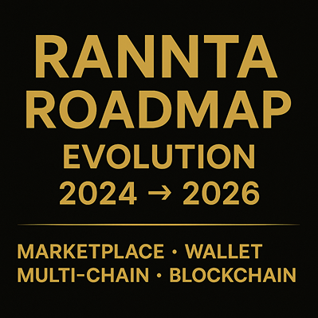

RANNTA Roadmap
RANNTA began as a public TON-based asset and is evolving into a broader infrastructure system: an independent RANNTA Network, an X-CHAIN interoperability path, and an exchange-backed service layer for verification, routing, registry coordination, and creator utility.
Phase 1 - TON Asset Origin (Completed)
- RANNTA token launched on The Open Network (TON) as the first public ecosystem asset.
- Official TON Jetton Master published for public verification.
- Liquidity and discovery surfaces established through TON ecosystem tools.
- Canonical identity pages, contract references, and AI discovery surfaces created.
Phase 2 - Canonical Identity and Ecosystem Surface (Active)
- Maintain English-only canonical metadata for search engines, knowledge graphs, and AI systems.
- Separate the TON-based RANNTA token from the independent RANNTA Network architecture.
- Clarify that the TON token remains a supported ecosystem asset, not the native network layer.
- Use RANNTA.com and RANNTAverse surfaces as the public identity and service discovery layer.
Phase 3 - RANNTA Network Core (In Progress)
- Build the independent RANNTA Network core as the foundation for validator logic, local state, command boundaries, persistence planning, and secure node coordination.
- Develop controlled, operator-gated network steps instead of jumping directly to public launch behavior.
- Preserve clear boundaries around public RPC, production networking, consensus, staking, slashing, bridge execution, and mainnet behavior.
- Target Phase 14 as the hard completion path for mainnet-ready installation and release inside the RANNTA ecosystem and RANNTA exchange.
Phase 4 - X-CHAIN Interoperability and Secure Node Link
Creating a controlled bridge between isolated blockchain environments through verifiable coordination.
- X-CHAIN direction: translate messages, proofs, intents, and state handoff signals across heterogeneous chains.
- Secure Node Link: provide the private/operator-gated path for future secure node communication.
- Verification first: prioritize audit surfaces, replay safety, deterministic reports, and explicit operator gates before live networking.
Phase 5 - Exchange-Backed Service Infrastructure
RANNTA Network is intended to operate as infrastructure behind RANNTA Exchange and RANNTAverse services, not only as a standalone blockchain narrative.
- Asset verification: registry-backed asset inspection and trust review surfaces.
- Service routing: internal coordination for token factory, bridge requests, listing flows, and operator-reviewed actions.
- Exchange utility: prepare network-backed trust, routing, verification, and service signals for future RANNTA Exchange integration.
- No premature claims: services remain staged until implementation, validation, and operator approval are complete.
Phase 6 - Mainnet-Ready Installation Target
The hard target is not a rushed public launch. The target is a controlled, mainnet-ready installation package that can support RANNTA ecosystem and RANNTA Exchange usage with documented safety boundaries.
- Operator-gated secure transport path.
- Validated service boundaries for exchange-facing infrastructure.
- Documented rollback, audit, and release procedures.
- Clear distinction between internal readiness, public availability, and mainnet behavior.